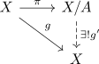
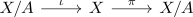

cofibration from a contractible space induces homotopy equivalence to the collapse
Proposition
Let $\iota: A \rightarrowtail X$ be a cofibration, where $A$ is contractible
Then the collapse
\begin{align*}
X \rightarrow X/A
\end{align*}
is a Homotopy equivalence
Proof
Since $A$ is contractible, there exists a homotopy
\begin{align*}
H: A \times [0,1] \rightarrow A
\end{align*}
with
\begin{align*}
H(-,0) =& \mathrm{id}_{A} \\
H(-,1) =& \mathrm{const}
\end{align*}
we can extend $H$ to (cf. continuous map and restriction to the image)
\begin{align*}
H: A \times [0,1] \rightarrow X
\end{align*}
and by Homotopy Extension Property, there exists an extension for $\mathrm{id}_{X}$
\begin{align*}
\overline{H}: X \times [0,1] \rightarrow X
\end{align*}
where
\begin{align*}
\overline{H}(-,0) =& \mathrm{id}_{X} \\
\overline{H}(a,1) =& \mathrm{const}
\end{align*}
let
\begin{align*}
g(x) \coloneqq \overline{H}(x,1)
\end{align*}
then we get by the universal property of a quotient topology

a unique continuous map $g'$
By construction,
\begin{align*}
g' \circ \pi = g = \overline{H}(x,1)
\end{align*}
and hence $g' \circ \pi$ is homotopic to $\overline{H}(x,0) = \mathrm{id}_{X}$
furthermore, because $\overline{H}(A,[0,1]) = H(A,[0,1]) = A$, there exists the map
\begin{align*}
\pi \circ \overline{H} \circ \iota: X/A \times [0,1] \rightarrow X/A
\end{align*}
given by

where $\iota([a]) = a$ for a constant $a \in A$